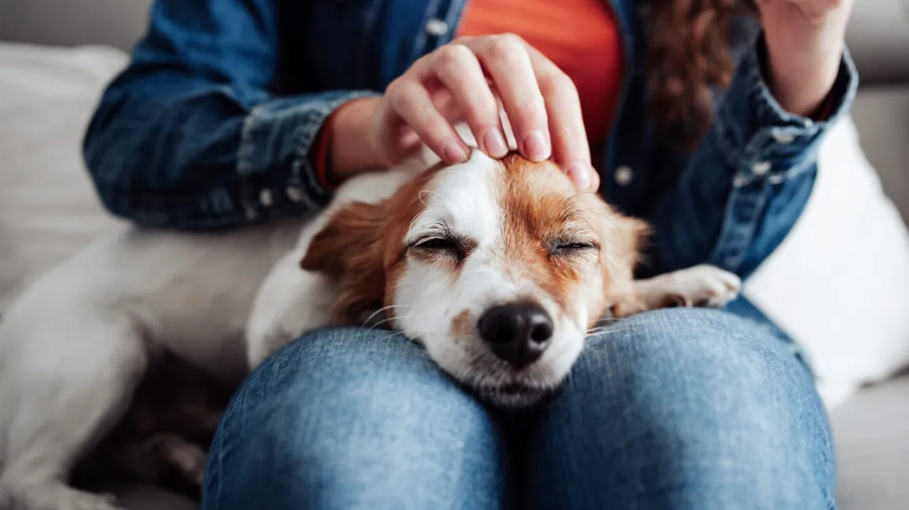

Welcome to Lindell Animal Adoption Center
[ where loving homes find furry friends! ]
Lindell Animal Adoption, established in 2017 on Lindell Blvd, St. Louis, has been a lifeline for homeless pets and caring individuals. Our founders' vision and dedication have made us a trusted cornerstone in the community. Through countless adoptions and unwavering advocacy, we've transformed lives and spread compassion. Our mission remains steadfast: to provide loving homes and second chances to every animal in need.
